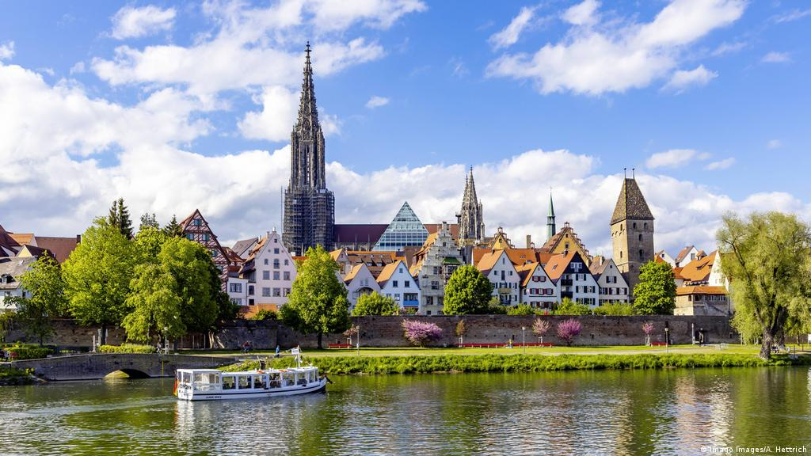
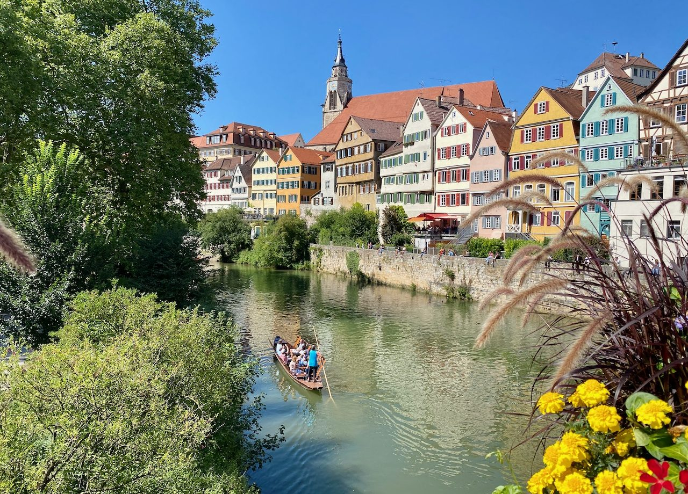
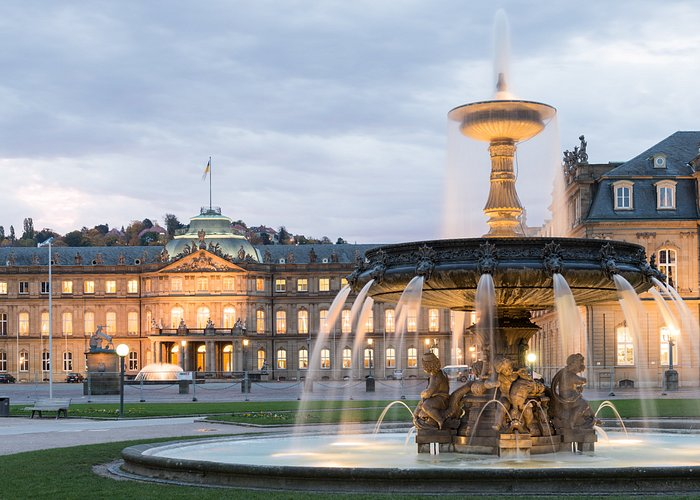
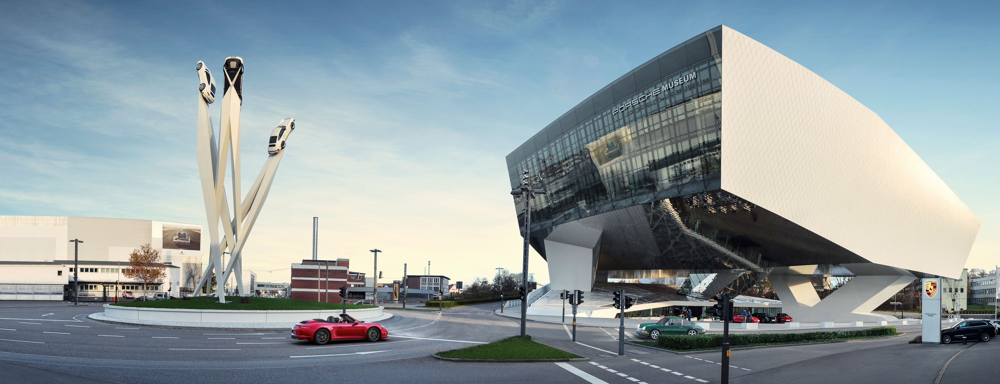
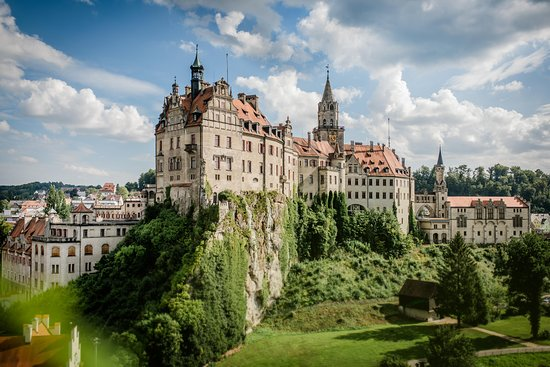
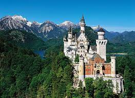

Ulm

Tübingen

Stuttgart


Porsche Museum
Schloss Sigmaringen

Schloss Neuschwanstein

The ULTIMATE Disney Castle!
Neuschwanstein Castle is a 19th-century historicist palace on a rugged hill above the village of Hohenschwangau near Fuessen in southwest Bavaria, Germany. The palace was commissioned by King Ludwig II of Bavaria as a retreat and in honour of Richard Wagner.
Munich

Munich, Bavaria’s capital, is home to centuries-old buildings and numerous museums. The city is known for its annual Oktoberfest celebration and its beer halls, including the famed Hofbräuhaus.